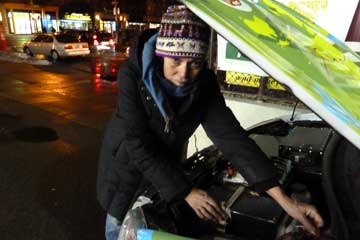
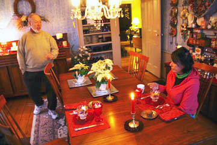
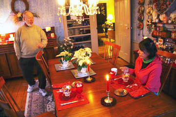
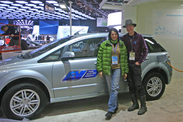
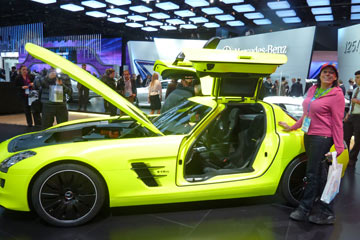

Her på Manhattan har jeg Grønne, stået i flere dage imens Hjalte og Nina var i Danmark. Selvfølgelig var jeg en smule nervøs, der er uvant for mig at være alene og folk her i kvarteret er sorte. Heldigvis var det de flinkeste mennesker jeg har mødt og for første gang nogensinde fik jeg strøm på en tankstation. De måtte endda flytte en Pepsi-automat for at komme ind til kontakten. Da sneen begyndte at fyge kunne jeg næsten ikke se noget, så jeg lukkede øjnene og da jeg vågnede igen havde jeg fået en dejlig tyk snedyne på.
Grønne
Da turen startede kørte Hjalte og jeg i hver sin bil, Grønne og Blå. Men fra Moskva måtte den Blå Bil sendes tilbage til Sakskøbing. Batteri-styresystemet duede ikke. Bilen kunne enten ikke starte eller lade - sådan skiftevis. Den vil blive repareret og fortsætte på turen.
Firmaet Afuture som har bygget vores elbil er gået konkurs. Det får ikke nogen betydning for vores verdensomrejse, da vi selv ejer bilen og betaler rejsen. Vi fortsætter derfor ufortrødent, og håber på at bilen aldrig går i stykker, nu da der ikke længere er et værksted. Søren har dog lovet fortsat at supporte os med gode råd... han fortsætter på elbilfronten på anden vis.


Da Hjaltes far pludselig er død har vi forladt Grønne for nogle dage. Hjalte, Ida, Elliot og jeg tog af sted med fly fra fra New York om eftermiddagen. Da vi mødte vores søn Emil i København var det blevet morgen. I en lejet bil kørte vi mod Langeland hvor hele familien samledes. Mandag flyver Hjalte og jeg tilbage til New York for at sende Grønne med skib til Spanien.
Nina


Se, der er Hudsonfloden, der er skyskraberne på Manhattan! Hjalte og jeg måtte råbe vores begejstring ud. Grønne har nu kørt os tværs over USA fra San Francisco til New York, over 7000 kilometer! Vi stoppede på hjørnet af Harlem og Central Park, lige ud for det hus hvor vi skulle besøge nogle venner. Rita tog godt imod os og viste os den betagende udsigt fra 9.sal. Bagefter blev Grønne sat til opladning på den lokale tankstation, hvor fem mand først måtte flytte på en Pepsi-automat for at finde et passende elstik. Da det var ordnet var det tid til et glas rødvin sammen med Rita og en god lang snak om livet i New York.
Nina


Vi snakkede med journalist Bill Huges fra the Bloomsburg Press, som fotograferede os og lavede et interwiew. Derefter skovlede vi et tykt lag is og sne af Grønne som stod parkeret udenfor White Birch bed and breakfast. Det begyndte at regne og vi kørte videre gennem det dårligste vejr nogensinde. Imens regnen frøs til is på ruderne, pjaskede Grønne sig gennem et tykt lag tøsne og vejsalt. Vi stoppede ved en RV camping og fik Grønne sat til at lade. Til os var der kun chokolade, kiks og chips. Vi sad så tre timer indendøre med over os.
Nina


Da vi forlod det historiske hus havde jeg taget angorasokker på og benvarmere af et par afklippede strømper. Nede i bunden af bilen lå et sammenrullet liggeunderlag og ovenpå en dunjakke inde i en flosjakke med to flasker varmt vand. Når jeg stak benene ind i jakkerne kunne jeg nogenlunde holde fødderne varme. Ved frokosttid travede vi gennem snebunker på de fortovsløse veje for at komme hen til en genbrugsbutik og et cafeteria. Jeg opdagede at der var huller i mine sko og jeg fik våde strømper. Denne aften var vi heldige at få et godt værelse på et af de indiskejede moteller. Grønne fik sit eget elstik uden på bygningen så vi kunne have varme på værelset i hele den frostkolde nat. Godt for min hule hoste og Hjaltes iskolde tæer.
Nina
 

Forpuppede i vores dunsoveposer lå vi og ventede på at det skulle blive morgen. Klokken seks var Hjalte oppe og vække hotelværten som slog relæet til, så Grønne igen kunne få strøm. Det var hård frost og en af battericellerne var under 0 grader. Morgenmaden på det bundfrosne værelse blev hvad vi havde: Havregryn med lidt honning og varm nescafe hældt på. I frostvejr kører Grønne ikke så langt på en opladning. Heldigvis fandt vi et firma i Clyde der reparerede camping-biler. Der sugede Grønne strøm imens vi spiste frokost og varmede os på en kæderestaurant. Om aftenen kom vi til et hotel hvor Grønne ikke kunne få strøm. Vi måtte så køre til et Bed and Breakfast i Oberlin på den allersidste procent. Lidt for nervepirrende, men det endte med en garage med strøm til Grønne, og et fint lunt værelse med en himmelseng til os. Huset som var bygget i 1830 havde en interessant historie. Det havde været en station i "den underjordiske jernbane" et netværk som hjalp bortløbne slaver på deres flugtrute til Canada. Vi så det hemmelige rum under gulvet hvor slaverne kunne skjule sig.
Nina og Hjalte


Et flmhold fra NBC filmede os og Grønne! Med lidt held bliver indslaget på et minut i deres store reportage om Detroit Auto Show. Da det var overstået og Grønne var opladet tog vi en hjertelig afsked med vores venner Linda og Bruce som vi havde boet hos. Det sneede da vi forlod Detroit. For at spare kører vi stadig uden varme i bilen, da det ville tage en del af strømmen. En solnedgang som syntes aldrig at ville slutte satte horisonten i brand bag det mørke vinterfrosne landskab. Da Grønne var ved at løbe ud for energi var der ikke noget motel i nærheden. Så helt mod vores principper måtte vi køre 20 kilometer tilbage og nåede kun lige akkurat frem. Jeg spiste et gammelt stykke brød og lidt mandler til aftensmad. Vi tog varmeapparatet fra og satte Grønne til. Om natten skete der det som ikke måtte ske: Motellets relæ slog fra, så Grønne holdt op med at lade i 9 graders frost.
Nina

En hel dag på Detroit Auto Show. Først gav vi ture med Grønne og prøvede selv alle de andre elbiler på prøvebanen. Oppe i den store udstillingshal viste de store bilfabrikker mange elbiler og hybrider! Det var årets store nyhed og nogle af bilerne er allerede på markedet. Bilerne skinnede i lampelyset og så vidunderlige og forførende ud i lak og læder. En af Hjaltes favoritter var Fords Focus, mens jeg hældede mere til den nye Tesla personbil. BYD, Mercedes, Smart, Honda, Audi, VW og mange flere var på banen med EL. Men alt taget i betragtning står Grønne sig stadig godt med hensyn til ladetid og kørekilometer. Og faktisk kørte kilometer! Kunderne venter på den masseproduktion som kan gøre elbilerne billigere - og batterierne bedre. Nu kommer elbilerne!
Nina